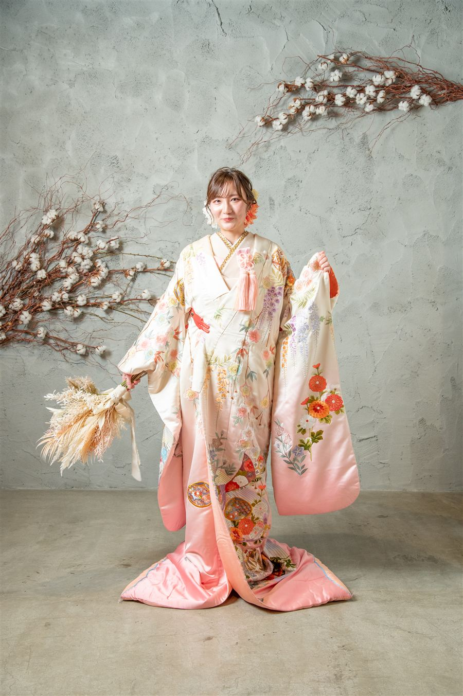
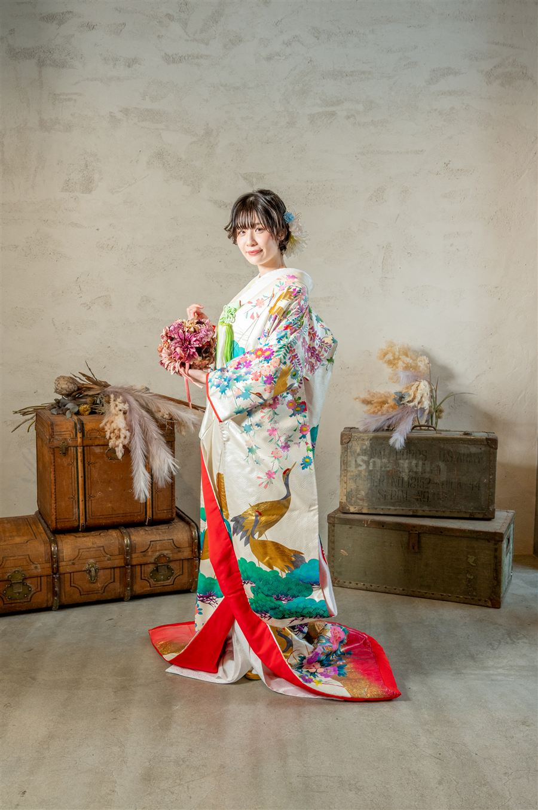

一生に一度の和装を、
ゆっくり選んでください。
前撮りも、挙式も、披露宴も。
白無垢の清らかさも、色打掛の華やかさも。
気になる衣裳に♡を付けて、お店に送るだけ。
ヘアメイクと一緒に、いつものお店でご相談いただけます。
白無垢と色打掛、色打掛を2着など、お色直しのご相談もお店へどうぞ。
選び方は、かんたん3ステップ
1. ♡を付ける：気になる衣裳に♡を付けてください。何着でも大丈夫です。
2. LINEでお店に送る：お気に入りの一覧を、ボタンひとつでお店のLINEに送れます。
3. お店でご相談：衣裳とヘアメイクを、まとめてお店とご相談ください。
迷ったときの、選び方のヒント
| 選び方 | ひとこと |
|---|---|
| 王道の華やかさなら | 赤・朱、金の色打掛 |
| やわらかく、かわいらしく | ピンク・紫、白・生成りの色打掛 |
| 人とかぶらない、今っぽさ | 緑・青、黒、モダン・レトロの色打掛 |
迷ったら、いくつか♡を付けてお店にご相談ください。似合う一着を一緒に選んでくれます。
小物の色で、もっと自分らしく。
懐剣・筥迫、掛下、羽織紐、袴は、白のほかに色ものも選べます。くわしくはお店にご相談ください。
よくある質問
Q. 実際の衣裳を見ることはできますか？
A. このページの写真でお選びいただけます。衣裳は、ご利用の日の1週間前にお店に届きます。
Q. 人気の衣裳は、早めに決めたほうがいいですか？
A. 同じ衣裳はご予約の早い順になります。春・秋の人気の時期は、お早めにお店へご相談ください。
Q. 何着まで選べますか？
A. ♡はいくつでも付けられます。白無垢と色打掛、色打掛を2着など、お色直しのご相談もお店へどうぞ。
Q. サイズは大丈夫ですか？
A. サイズはお店にご相談ください。
Q. 新郎さまの衣裳はありますか？
A. 紋付袴もご用意しています。くわしくはお店にご相談ください。